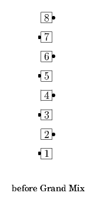
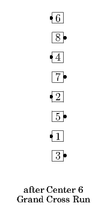
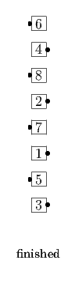

Center pairs of dancers (3 pairs from an 8-dancer Tidal Line, 2 pairs from a 6-dancer Tidal Line) "Grand Cross Run" new Center pairs of dancers Trade. "Grand Cross Run" means that the dancers in each pair do a Run into a once-removed spot, on the far side of the other dancer in their own pair, as if they were the center pair of their own 4-person Line. Ends in a Tidal Line.
  
From a Generalized Tidal Line: Swing, then do the parts of a Grand Mix. Ends in a Tidal Line.
From a R-H Column, or other applicable formations: Those who can, Right Arm Turn 1/4 (or 3/4), then all do the parts of a Grand Mix. Ends in a Tidal Line.
© Copyright 2004-2017 Vic Ceder and CALLERLAB Inc., The International Association of Square Dance Callers. Permission to reprint, republish, and create derivative works without royalty is hereby granted, provided this notice appears. Publication on the Internet of derivative works without royalty is hereby granted provided this notice appears. Permission to quote parts or all of this document without royalty is hereby granted, provided this notice is included. Information contained herein shall not be changed nor revised in any derivation or publication.